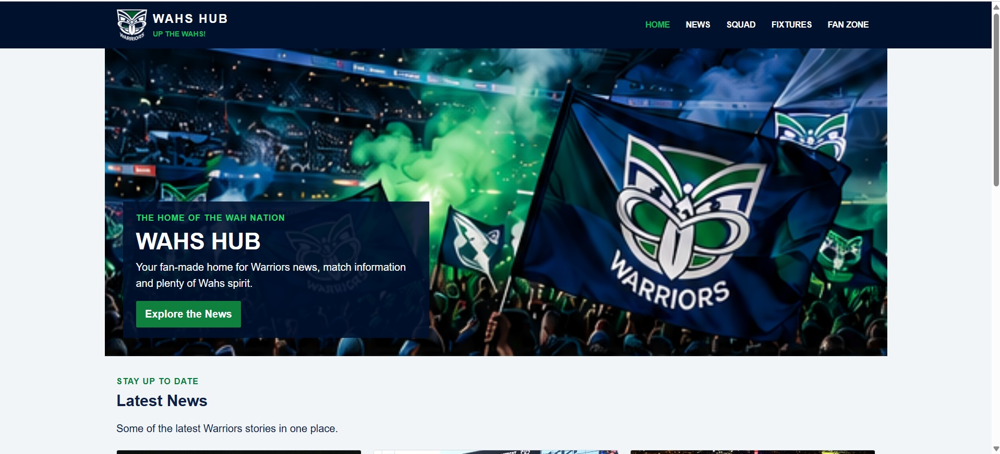

COURSE 04 · ITWD5.130
Website
Development
Designing and building websites using HTML, CSS and JavaScript, with a focus on usability and interactive features.
WHAT I STUDIED
Course overview
This course developed my understanding of website structure, styling and interactivity. I applied these skills in a multi-page fan website project and published the finished work online.
FEATURED PROJECT
WAHS Hub – Warriors fan website
HTML · CSS · JavaScript
A website built for Warriors fans
Created a multi-page website featuring Warriors news, squad information, fixtures and a fan zone. The project included interactive features and a consistent design across pages.
- Responsive navigation and mobile menu
- News category filtering and read-more controls
- Squad player cards and fixtures information
- Fan Zone poll interaction
- Published using GitHub Pages
This screenshot shows the homepage design, Warriors branding and navigation. The published website is available to view online.

SKILLS DEVELOPED
What I can take forward
HTMLCSSJavaScriptResponsive designUser experienceGitHub Pages